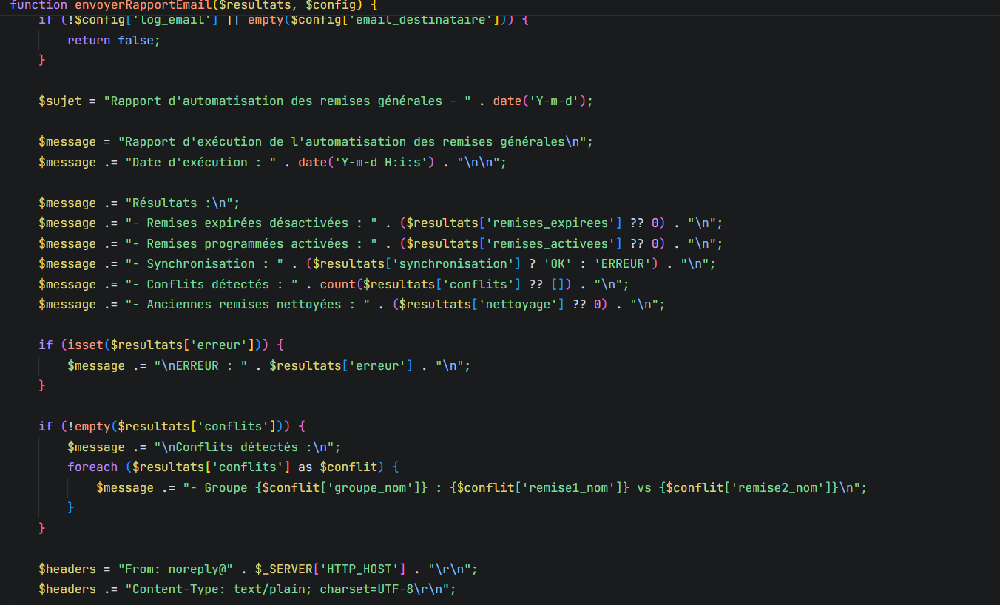

Automatisation des remises générales (IPTwins)
Contexte
Dans le cadre de l'évolution de l'application interne d'IP Twins, j'ai travaillé sur le module d'automatisation des remises générales appliquées aux extensions de domaines (ex. nouveaux gTLD). L'objectif était de fiabiliser, sécuriser et documenter ce processus critique.
Projet principal
Automatiser l’application de remises sur des catégories d’extensions (ex: nouveaux gTLD) avec garde-fou sur les prix.
Fichiers clés
scripts/cron_remises_generales.phporchestrateur CRON (CLI/Web, sécurité IP, logs, reporting)include/remises_generales_automation.phpclasse métier (désactivation/activation, synchronisation, nettoyage, rapport)sql/groupe_remise_generale.sqlstructure et migration de la table, avec commentaires
Ce que j’ai fait
- Analyse de l’existant et mise en conformité avec les conventions du système
- Sécurisation: mise à jour de la protection par IP pour l’exécution web
- Robustesse: gestion des erreurs améliorée (try/catch, codes sortie 0/1)
- Journalisation: utilisation et validation de
tprint/preprint - Cohérence métier: correctif sur le paramètre de rétention transmis au nettoyage
- Documentation SQL: commentaires explicatifs sur champs et index
Captures code

Extraits des scripts et de la classe métier
Captures affichage

Affichage, reporting, et traces d’exécution
Comment ça fonctionne
- Initialisation: fermeture session, timeouts, mémoire, headers, includes requis
- Exécution: tâches de désactivation, activation, synchronisation, nettoyage
- Nettoyage: suppression des remises inactives au-delà d’un nombre de jours configurable
- Logs/rapport: temps d’exécution, détails, option d’envoi par email
Points techniques clés
- Conventions d’initialisation unifiées (
session_write_close,set_time_limit,ini_set) - Sécurité IP alignée avec les autres robots
- Paramétrage de rétention ajouté à
executerToutesLesTaches()et transmis au nettoyage - Table SQL commentée: compréhension des champs, index et migrations
Compétences démontrées
- Lecture et refactor de code PHP dans un projet existant
- Sécurisation (IP whitelist) et gestion d’erreurs
- Conception SQL et documentation technique
- Respect des conventions et intégration sans régression
Comment tester
CLI
php scripts/cron_remises_generales.phpWeb (IP protégée)
Exécuter via URL protégée et vérifier les IP autorisées
Logs
Consulter temps d’exécution et étapes réalisées
Résultats et impact
- Automatisation fiable et traçable
- Réduction du temps de gestion manuelle des remises
- Documentation prête pour maintenance et audits
Prochaines étapes
- Ajouter des tests automatisés pour valider les règles de remise
- Étendre l’interface d’administration pour gérer les remises générales